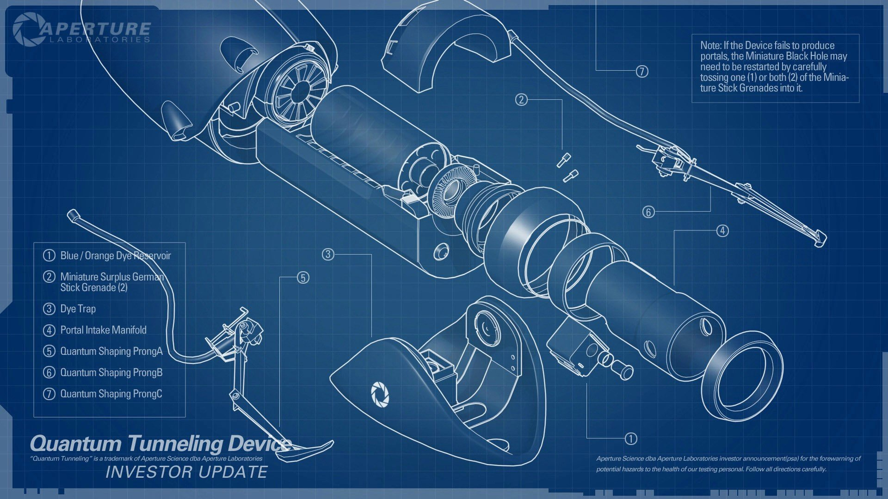
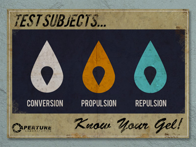

Découvrez ici toute l'actualité de notre entreprise
Le 3 Janvier 2018
Une date de sortie enfin annoncée !!!

Verum ad istam omnem orationem brevis est defensio. Nam quoad aetas M. Caeli dare potuit isti suspicioni locum, fuit primum ipsius
pudore, deinde etiam patris diligentia disciplinaque munita. Qui ut huic virilem togam deditšnihil dicam hoc loco de me; tantum sit,
quantum vos existimatis; hoc dicam, hunc a patre continuo ad me esse deductum; nemo hunc M. Caelium in illo aetatis flore vidit nisi aut
cum patre aut mecum aut in M. Crassi castissima domo, cum artibus honestissimis erudiretur.
Le 27 Décembre 2017
Des célébrités s'invitent dans nos locaux
Et quoniam apud eos ut in capite mundi morborum acerbitates celsius dominantur, ad quos vel sedandos omnis
professio medendi torpescit, excogitatum est adminiculum sospitale nequi amicum perferentem similia videat,
additumque est cautionibus paucis remedium aliud satis validum, ut famulos percontatum missos quem ad modum
valeant noti hac aegritudine colligati, ita etiam alienis oculis visa metuitur labes.
Le 16 Novembre 2017
Retrouvez tout nos produits accompagnant le portal gun !

Quod si rectum statuerimus vel concedere amicis, quidquid velint, vel impetrare ab iis, quidquid velimus, perfecta
quidem sapientia si simus, nihil habeat res vitii; sed loquimur de iis amicis qui ante oculos sunt, quos vidimus aut de
quibus memoriam accepimus, quos novit vita communis. Ex hoc numero nobis exempla sumenda sunt, et eorum quidem maxime
qui ad sapientiam proxime accedunt.